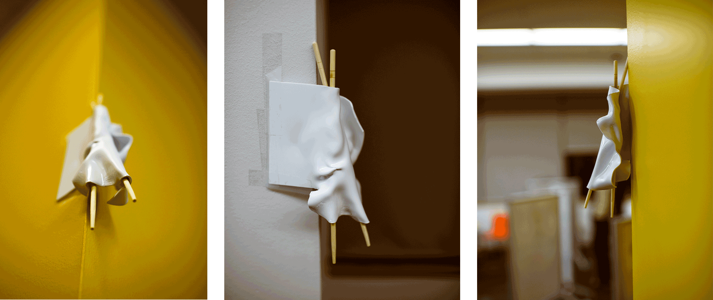

IAT 336
MATERIALS IN DESIGN.
Yan Tymoshenko, Christian Lim, Brendan McKay
Week 9
In week 9, team 'team' battled 500 iterations of sconce sketches. The war was long and arduous, yet eventually they would perservere After further developing persona and concept, the three young men were able to quickly iterate through metric tons of ideas. As our website is still under construction, the images of these iterations are hosted in an Imgur collage. Imgur.
Week 10
Schedule : We will meet together on wednesdays and saturdays.

Some sketch models we made before landing on the forms we wanted for our individual prototypes.

Three individual prototypes. Each uses either styrene, paper, or wood.
This video shows the styrene heating process we went through to create one individual prototype.
Our 1:1 scale prototype was born from our research on the cultural ergonomics of chopsticks, and our form analogy considering fashion design. The sconce appears as a white dress, blowing in the wind and draped over the chopstick legs. The sconce is to be mounted on the corner of a wall, and can be switched on and off by operating the chopsticks. This interaction 'closes' and 'opens' the legs of the sconce.